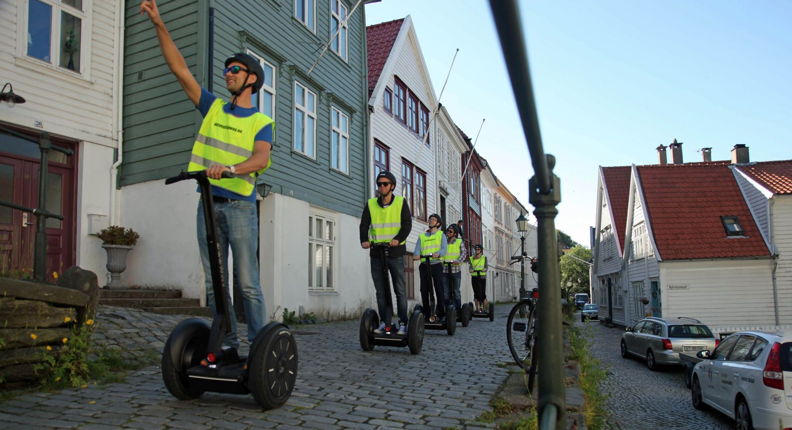
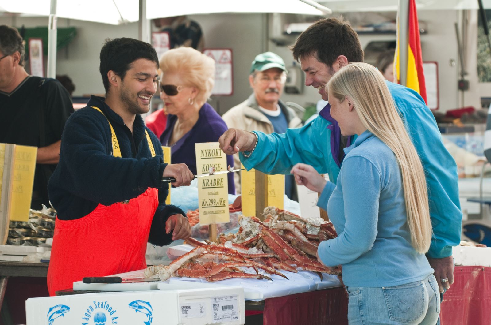

Topp 10 Ting å gjøre i Bergen
Aftenposten 10.august.2017

Få detaljene til fots
Selv om Bergen er Norges nest største by, har den en ganske liten og kompakt sentrumskjerne.
Derfor er en sightseeing til fots kanskje den beste måten å oppleve byen på.
Trange brosteinsbelagte gater med små gamle trehus i ulike farger er noe av det Bergen er kjent for.
Bebyggelsen strekker seg fra sjøkanten og oppover i fjellsiden.
Kultur og Fjellsiden

Ikke glem å opplev kultur byen Bergen
Bergen er kanskje en storby i norsk skala, men stemningen minner om den du finner i en sjarmerende småby.
De patriotiske bergenserne er stolte av sin allsidige by, som har lange historiske og kulturelle tradisjoner.
De viser deg gjerne sine favorittattraksjoner, restauranter og kaffesjapper.